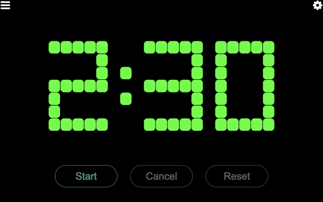
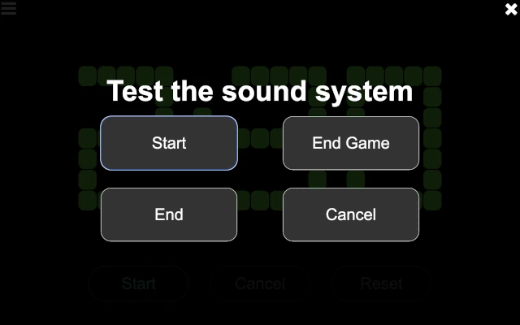

Time Keeper
The time keeper page provides controls for starting, stopping, and resetting the match timer.
There is only one button enabled at a time, based on the allowable action at any given time. Those actions are:
- Start
This button starts the match timer. Time starts counting down from the match time (2:30 for the official game, though it may be different for alternate games) as soon as this button is pressed, and the start sound is played. All other sounds (30 second warning and end of match) are automatically played at the appropriate times.
- Cancel
During a match, this button cancels the match and stop the timer. This is only used in very extraordinary situations, and hopefully is never used at an event! The timer immediately stops (turning red), and the match canceled sound is played.
- Reset
When a match is over (either because the timer expired or the match was canceled), this button resets the timer, preparing it for the next match. The timer automatically resets 15 seconds after the match ends, so this is only necessary if the timer needs to be reset quicker.
The majority of the time, the time keeper only uses the Start button at the
start of a match (clicking it when the announcer says “Go” at the end of “3, 2,
1, Go!”, or whatever appropriate point based on how matches are started at the
event).
Clicking on the settings button in the upper left of the timer control page opens the sound system test page:
The four buttons (Start, End Game, End, and Cancel) play the
corresponding sounds. This is helpful to determine that the sound output is
getting into the venue’s sound system, and that it is loud enough to be heard
by the participants (both volunteers and teams).
Once done, click on the close button in the upper right to close the sound system test page.